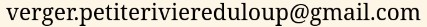

Saison 2021, Nourrir notre monde Avignon et la Société de développement Pointe-à-la croix ont pris en charge le verger afin de s'assurer que les efforts nécessaires soient déployés pour honorer le travail de feu Rodrigue Guitard en maintenant le verger en santé et, ainsi, continuer de se fournir en pommes (et plus !).
Le verger est en transition vers une régie biologique et n'utilise plus d'intrants chimiques depuis plus d'un an. Aussi, nous voulons l'opérer en commun, c'est-à-dire pour et PAR les intéressées des environs. Par exemple, nous offrons un échange travail-fruits où l'on peut contribuer aux tâches du verger et repartir avec des pommes et des produits transformés (jus, cuir, etc.). Nous croyons qu'avec le partage de connaissances et de savoirs-faire il est possible de propager un intérêt et de mettre à profit l'intelligence collective dans le développement d'une expertise conviviale pour la pomiculture. Pour en savoir d'avantage, n'hésitez pas à nous contacter !
En se souhaitant une belle récolte 2021 et en espérant vous y voir,
Iko Lachapelle, à la coordination des soins, pour Nourrir notre Monde Avignon.
Cette année est particulièrement difficile. Nous ne sommes arrivées qu'au mois de juin dans un verger sans pomiculteurs depuis deux printemps. De surcroit, après un mois de mai anormalement chaud, les arbres ont fleuri avant le temps et ont été durement affectés par le gel. Résultat : les trois quarts des fleurs (et de la récolte) ont avorté. Les quantités restantes ne justifiaient pas les investissements nécessaires aux traitements insecticides biologiques et les pommes sont piquées par Rhagoletis pomonella, la mouche de la pomme. Nous nous en excusons d'avance, mais une fois débarrassées de nos caprices appris au supermarché, nous trouvons nos pommes bonnes à croquer et plus qu'adéquates pour la cuisson.
Prix : panier de ~11.5 lb = $8.50
minot de ~40 lb = $25
bouteille de jus 1,89 L = $6
pommes à chevreuil = $7
| Jaune transparente | cueillie le 5 août |
|---|---|
| La pomme à compote par excellence, pareille à la celle de grand-mère. C'est aussi celle qu'on aime pour le beurre de pomme, les cuirs de fruits et les gâteaux à la compote. | |
| Lodi | cueillie le 4 aout |
| La petite pomme sûre, mais sucrée du début d'août. Aussi une bonne pomme à compote. | |
| Norland | cueillie le 10 aout |
| Pomme à croquer, à tarte ou à jus, avec du caractère ! | |
| Battleford | cueillie le 8 aout |
| Ne vous laissez pas tromper par sa couleur, elle n'est pas verte de jalousie et n'a rien à envier à ses consoeurs plus rouges ; douce et juteuse, parfaite pour les chaleurs déréglées de l'été. | |
| Jersey-mac | cueillie le 15 aout |
| Viking | prête à cueillir |
| Rouge comme l'amour, douce comme le jour, rien à voir avec les hordes sanginaires du même nom. À croquer, mais conserve bien sa saveur et sa couleur à la cuisson. | |
| Beacon | prête à cueillir |
| Non mais ! regardez-la avec ses airs de gala. D'ailleurs le goût rappelle un peu celui des pommes à chaire jaune. À croquer. | |
| Paulared | prête à cueillir |
|---|---|
 Variété bien connue de grosses pommes à croquer. Se cuit aussi rapidement en compote, pour la belle compote rose ! Variété bien connue de grosses pommes à croquer. Se cuit aussi rapidement en compote, pour la belle compote rose ! |
|
| Pommettes | prête à cueillir |
Venez nous visiter, rue du Verger, à Pointe-à-la-Croix !
Le kiosque est ouvert les samedis et dimanches de 9h à 17h.
L'autocueillette, pour l'automne 2021, ne sera exceptionnellement disponible que pour les groupes, sur réservation. Les promenades sous les pommiers et la pomme glannée au passage sont toujours les bienvenues, mais si la cueillette vous manque vraiment, nous vous invitons à considérer l'échange travail-fruits !
Contacter Iko au verger
via facebook